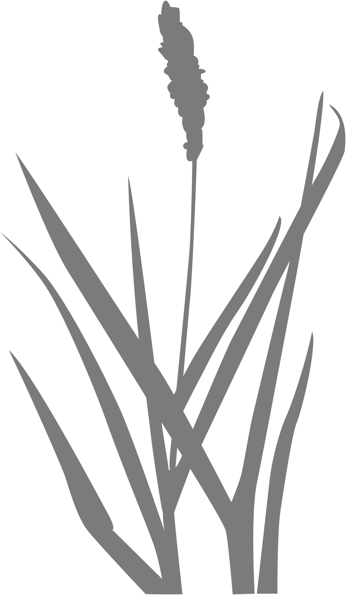
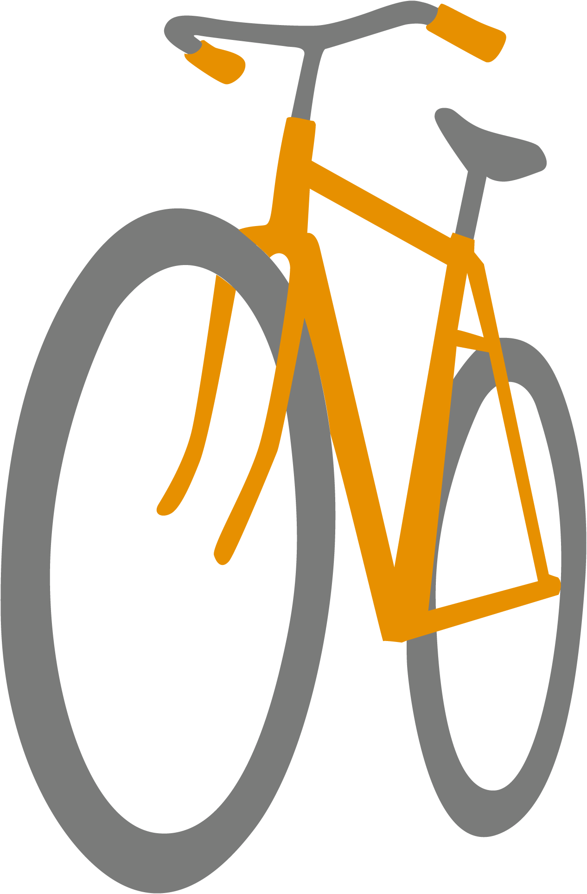
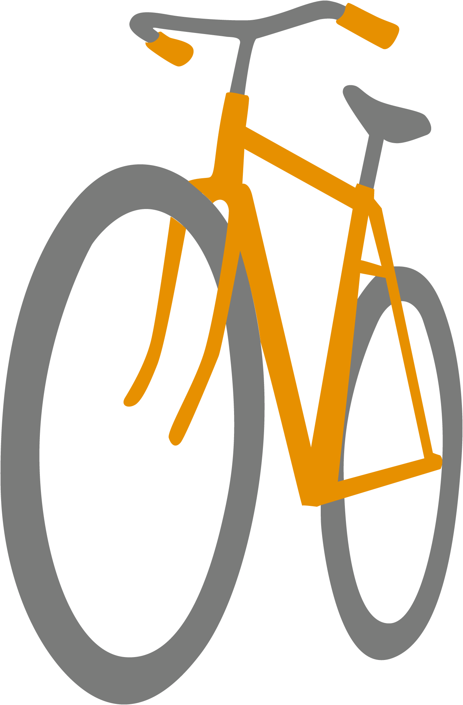
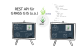
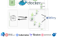
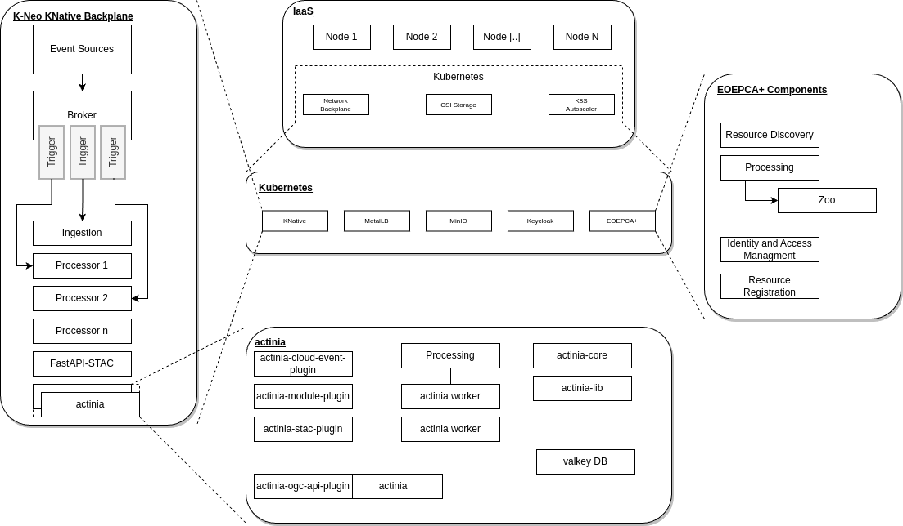

Your browser doesn't support the features required by impress.js, so you are presented with a simplified version of this presentation.
For the best experience please use the latest Brave, Firefox or Chromium browser.
News von actinia

 

FOSSGIS 2025 Münster
Vol. 3
Was ist actinia?

Was ist KNeo?
Weiter wolkenwärts!
Umsetzung in actinia
Kleinanzeigen


Leistungsstarke Lösung für die Verarbeitung, Analyse und Bereitstellung von Geodaten in einer Cloud-Umgebung
### Knative
- Erweiterung der Container-Orchestrierungsplattform Kubernetes
- Open Source Projekt verwaltet von Cloud Native Computing Foundation (CNCF)
- __„serverless“__ (Serverlos):
Anwendungen (Serverless-Apps) werden unabhängig von Serververwaltung gepackt und bereitgestellt,
bedarfsabhängig ausgeführt und automatisch je nach Bedarf skaliert sowie nur bei Nutzung abgerechnet.
- __"event-driven"__ (Ereignisgesteuert):
> Ereignis = Zustandsänderung (UI, Sensor Input, Nachrichten anderer Programme, ...)
> führt zu "event notification" (Ereignisbenachrichtigung)*
> Im Vergleich zu "message-driven" (Nachrichtengesteuert) entkoppelt von Konsumenten
- __"cloud-native"__ (Cloud-nativ):
> Ansammlung kleiner, unabhängiger und lose gekoppelter Services = Microservices
> Breitstellung in Containern, unabhängige Releases
- Auch für monolithische Apps bis hin zu Microservices und kleinen Funktionen
- KNative-Serving - KNative-Eventing
** CloudEvents - gemeinsames Event Format für Portabilität und Interoperabilität, per HTTP POST, ereignisspezifische Header, Textkörper
Kubernetes Native Earth Observation (KNeo) Platform
- Open Source Implementierung von event-driven, serverless Computing-Lösungen für die EO-Verarbeitung
- KNative-Serving
: KNeo Applications gepackt als stateless Microservices die CloudEvents empfangen und mit CloudEvents antworten
- KNative-Eventing
: Messaging-Infrastruktur zur Verbindung der KNeo-Prozessoren untereinander
- Definition neuer CloudEvent-Typen und Parametererweiterungen, geeignet für EO-Anwendungen (geometrische/geographische Operationen), auch in KNative-Triggern
- OGC API Processes (Zoo Project, actinia)
- STAC
- MinIO, Keycloak, OIDC, Fluentd/ELK, Prometheus, MetalLB, RabbitMQ, Kafka, Strimzi, ...
- ESA EOEPCA+ Kompatibilität



- Installation und Betrieb in einer Knative-Umgebung
- GRASS GIS und andere Geodatenwerkzeuge können effizient und skalierbar in einer modernen Cloud-Infrastruktur einsetzen werden
- bereits vorhandende Komponenten mit Anpassungen:
- actinia-stac-plugin
- actinia-module-plugin
- actinia worker für die eigentliche Prozessierung als serverless App
- Komponenten in Entwicklung:
- Aufsplittung in separate Microservices und Libraries
- actinia-ogc-api-plugin (POC)
- actinia-cloud-event-plugin Übersetzung CloudEvent -> actinia Prozesskette und bei Bedarf Rückgabe CloudEvent bei Ergebnis
curl --location 'http://localhost:3033/' \
--header 'Content-Type: application/cloudevents+json' \
--data '{
"specversion":"1.0",
"type":"com.mundialis.kneo.actinia.ingestion.start",
"source" : "/kneo/apps/ui",
"subject" : "nc_spm_08/PERMANENT",
"id":"e3525c6d-bbd8-404d-9fa3-1e421dc99c11",
"time":"2025-03-28T10:28:48Z",
"datacontenttype":"application/json",
"data":{
"list": [
{
"module": "r.slope.aspect",
"inputs": [{
"param": "elevation",
"value": "elev_ned_30m@PERMANENT"
}]
...
}
]
}
}'
##### Weitere Neuigkeiten, Features, Verbesserungen
---
## [5.1.0](https://github.com/actinia-org/actinia-core/releases/tag/5.1.0) - 2025-03-24
---
Add stdin for parameters by @anikaweinmann in [#501](https://github.com/actinia-org/actinia-core/pull/501)
---
Checking pixellimit for r.import commands by @linakrisztian in [#491](https://github.com/actinia-org/actinia-core/pull/491)
---
Enable import via vsicurl by @mmacata in [#482](https://github.com/actinia-org/actinia-core/pull/482)
---
Make resource storage delete asynchron by @anikaweinmann in [#456](https://github.com/actinia-org/actinia-core/pull/456)
---
Use __valkey__ instead of redis - functional adjustments by @mmacata in [#585](https://github.com/actinia-org/actinia-core/pull/585)
---
Renamed GRASS GIS __locations to projects__ by @anikaweinmann in [#565](https://github.com/actinia-org/actinia-core/pull/565)
---
Umzug GitHub Organisation: mundialis -> __actinia-org__
---
Allow one job queue per user by @mmacata in [#421](https://github.com/actinia-org/actinia-core/pull/421)
---
Linting + pre-commit Verbesserungen: super-linter und ruff in [#536](https://github.com/actinia-org/actinia-core/pull/536), [#574](https://github.com/actinia-org/actinia-core/pull/574)
---
Nutzung von Dependabot und Renovate u.a. in [#425](https://github.com/actinia-org/actinia-core/pull/425)
---
Updates für neue GRASS GIS und alpine Versionen
---
Dokumentation
---
...
---
## [4.8.0](https://github.com/actinia-org/actinia-core/releases/tag/4.8.0) - 2023-05-10
---
.
.
.
Vielen Dank
für Ihr Interesse!
Fragen?
Besuchen Sie
gerne unseren Stand!
.
.
.